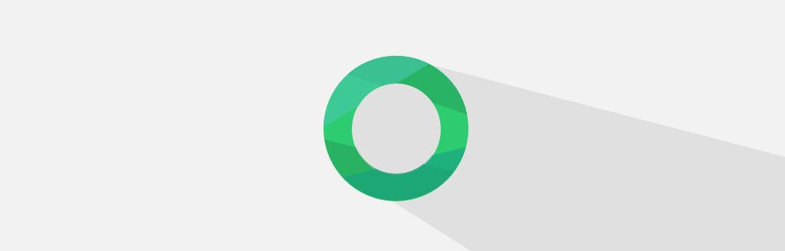

Skeuomorphic to Flat icon
Skeuomorphic icon မှ flat icon သို့ပြောင်းလဲဆွဲကြည့်ခြင်း

Sar ကို နောက်ထပ် version 2.0 ကို ပြင်မယ်လို့ စဉ်းစားထားတော့ အရင်ဆုံး icon design ကို ပြန်ဆွဲဖြစ်တယ်။ Icon Design ကို ဆွဲဖို့ စဉ်းစားကြည့်တော့ ပထမဆုံး မြန်မာစာလုံး ဝလုံးကို စဉ်းစားမိတယ်။ ငယ်ငယ်တုန်းက စာ ရေးသင်တုန်းက ဝလုံး ကို အဓိက ရေးခဲ့ရတယ်။ ဒါကြောင့် Sar ရဲ့ icon design အသစ်ကို ဝလုံး သုံးမယ်လို့ ဆုံးဖြတ်ခဲ့တယ်။ ဒီလိုစဉ်းစားပြီးတော့ icon အတွက် အခြားသူတွေ သုံးထားတဲ့ design ကို dribbble မှာ ရှာကြည့်တော့ iA Writer Icon Design တစ်ခုကို တွေ့တယ်။ သူက Keyboard ပုံစံလုပ်ထားတာကိုတွေ့တော့ သဘောကျပြီး ဝလုံး ကို keyboard character ပုံစံ လုပ်လိုက်တယ်။ တကယ့် အစစ်နဲ့ တူအောင် iPhone က keyboard garident ပုံစံ လုပ်လိုက်တယ်။ အဲဒီပုံကို ဆွဲလိုက်တော့ အောက်ကလို ပုံလေး ရလာပါတယ်။ Sketch 2 ကို အသုံးပြုပြီး ရေးဆွဲထားတာပါ။

iOS 7 Beta ထွက်လာပြီးနောက်ပိုင်းမှာ Flat Design က ပိုပြီးတော့ trend ဖြစ်လာပါတယ်။ iOS 7 အတွက် App တွေအတွက် flat design ကသာ အဆင်ပြေဆုံး ဖြစ်တယ်။ ဒါကြောင့် လက်ရှိ ဆွဲထားပြီးသား Sar 2.0 အတွက် icon ကို flat icon ပြောင်းဖို့ ကြိုးစားကြည့်ပါတယ်။ အရင်ဆုံး flat ဖြစ်အောင် ဖန်တီးကြည့်ပါတယ်။ ဝလုံးကို Sar 1.0 က icon အတိုင်း အစိမ်းရောင် သုံးမယ်လို့ စဉ်းစားပြီးတော့ ဆွဲလိုက်တော့ အောက်ကလို ရပါတယ်။

ကြည့်ရတာ အဆင်မပြေလှပါဘူး။ အနက်ရောင် background ဖြစ်နေတာကြောင့် ဖြစ်မယ်ထင်ပြီး အဖြူရောင် Design ကို ပြောင်းကြည့်ပါတယ်။ ဒီအချိန်မှာတော့ ကြည့်ရတာ အဆင်ပြေသွားပါပြီ။ သို့ပေမယ့် ရိုးရှင်းလှပါတယ်။

ဒီအဆင့်ပြီးသွားတော့ ဒီအတိုင်းကြီး သုံးလျှင် အရမ်းကို ရိုးရှင်းနေတယ်။ Skeuomorphism က လက်ရှိ မြင်နေရတာကို ရေးဆွဲရတဲ့အတွက် idea ပိုင်းက သိပ်ပြီး ခက်ခဲမှု မရှိလှဘူး။ သို့ပေမယ့် တူအောင် နောက်ပြီး ပေါ်လွင်အောင် ဆွဲရတော့ အတွက် လူတိုင်း ဆွဲနိုင်တာနေတာ့ မဟုတ်ပါဘူး။ flat design က အပေါ်ယံ ကြည့်ရင် ရိုးရှင်းလွဲကူပေမယ့် အတုယူစရာ မရှိတာကြောင့် ပိုပြီးတော့ စဉ်းစားရပါတယ်။ Typhography ကို အသုံးပြုထားရင်တော့ အခု icon လေးက မဆိုးလှပါဘူး။ သို့ပေမယ့် Typography မဟုတ်တာကြောင့် လက်ရှိ design ကို ထပ်ပြီးပြောင်းကြည့်ဖို့လိုလာပါတယ်။ ဒါကြောင့် လူသုံးများနေတဲ့ Long Shadow ထည့်ကြည့်ပေမယ့် သဘောမကျတာကြောင့် အပေါ်ကနေပဲ shading ထပ်ဖြည့်ကြည့်ပါတယ်။ အဲဒီအခါမှာတော့ အောက်ကလို ပုံစံထွက်လာပါတယ်။

အခု နောက်ပိုင်း dribble မှာ flat icon design ကို plain icon ထက် long Shadow Design တွေ ပြောင်းသုံးလာတာ ရှိပါတယ်။ ဥပမာ လေးတွေ ကြည့်ကြည့်ပါ။


iOS 7 မှာ ကျွန်တော်တို့ အနေနဲ့ flat icons များစွာကို မြင်တွေ့ရပါတော့မယ်။ ဒါအပြင် long shadow design လိုမျိုး trend အသစ်တွေကိုလည်း တွေ့မြင်ရမယ်လို့ မျှော်လင့်လျက်ပါ။ Ornagai app icon ကိုလည်း long shadow ပုံစံနဲ့ ဆွဲထားတာကို အောက်မှာ ကြည့်နိုင်ပါတယ်။

Long shadow က အခုအချိန်မှာ လူ သုံးများနေတဲ့ Design ပါပဲ။